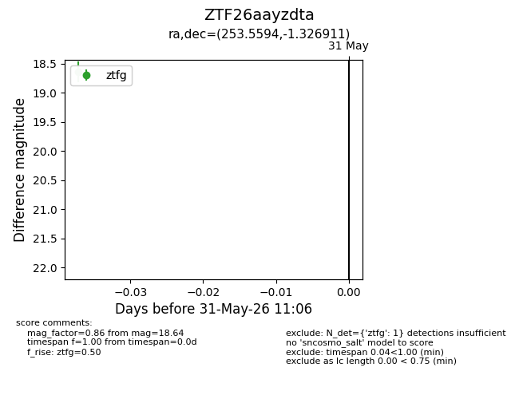
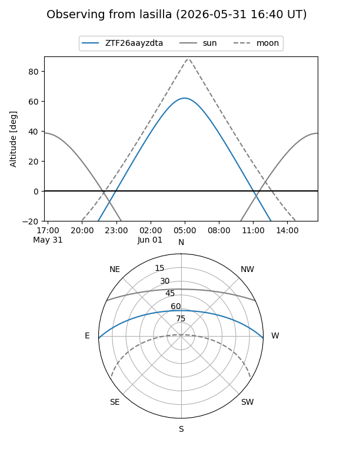
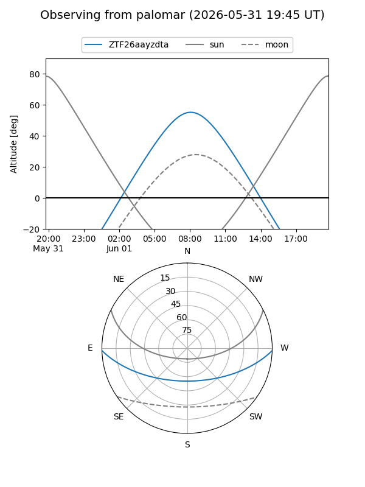

ZTF26aayzdta
Target ZTF26aayzdta at 2026-05-31 11:07
Aliases and brokers:
lsst-FINK: link
lsst-Lasair: link
lsst-ALeRCE: link
ztf-FINK: link
ztf-Lasair: link
ztf-ALeRCE: link
alt names
ZTF26aayzdta (ztf,fink_ztf)
Coordinates:
equatorial (ra, dec) = 253.5594,-1.32691
equatorial (HMS+DMS) = 16:54:14.25,-01:19:36.88
galactic (l, b) = (17.3148,+25.14245)
Flags:
Photometry:
last ztfg=18.64
1 ztfg detections
Lightcurve

Visibility


Additional plots